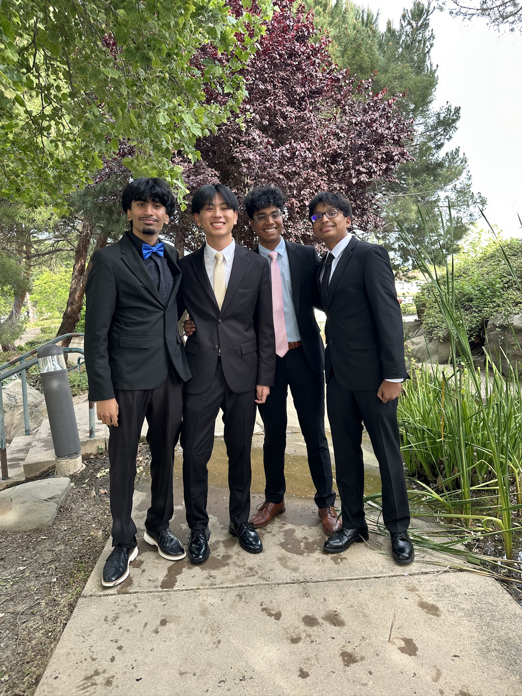

Leadership
I strive to create a working environment where everyone is heard, and I enjoy making sure everyone is on task and always has something to do.
About Me
This page introduces who I am, my interests, and my growth as a student.

My name is Dylan Chiu, and I am a student interested in art, computers, and history. I have developed a major passion in history over the years and I am interested in pursuing a career that can combine the past (history) and the future (CS). In school, I love learning. Whenever I encounter a topic that interests me, I stay engaged and enjoy asking questions.
Outside of class, I am an intern at the local museum helping archive items from Dublin's past. I enjoy documenting each item, learning where it came from, and understanding its historical significance. I have also updated our archiving system using knowledge from computer science in order to make the system easier and more convenient.
This portfolio represents my growth as a student and everything I have learned and accomplished in my high school career. It includes projects from Computer Science Essentials, my resume, and my contact information.
Strengths
I strive to create a working environment where everyone is heard, and I enjoy making sure everyone is on task and always has something to do.
I always am responsible and organized making sure that my assignments are completed on time so I don't have to wait until the last minute.
I take ideas from history and combine them with the present in creative ways to find solutions that are sometimes hidden.